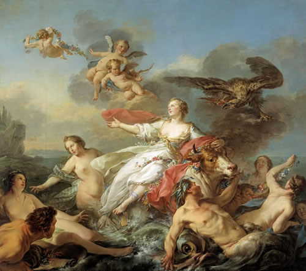

Agénor là vua của đô thành Sidon hùng cường và giàu có. Thần Poséidon, vị thần có cây đinh ba vàng khều sóng biển và bão tố, trong một cuộc tình duyên với tiên nữ Okéanide Libye đã sinh ra Agénor. Lớn lên, lập nghiệp ở xứ sở Phénicie, Agénor lấy Téléphassa làm vợ. Họ sinh được bốn trai và một gái, trai là Phinée, Cadmos, Phénix và Cilix, gái là Europe. Khó mà nói được niềm vui sướng của nhà vua Agénor trước việc mình có một người con gái. Đã có bốn con trai rồi, kể ra so với các nhà vua khác và các vị thần thì chẳng phải là nhiều, nhưng điều làm nhà vua khao khát, mong muốn là có được một người con gái. Số mệnh đã chiều vị vua nhân đức ấy, thật là ước sao được vậy!
Europe lớn lên trong sự chăm sóc hết mực và chiều chuộng khôn tả của gia đình. Nàng đẹp như ánh sáng mặt trời, ánh sáng mặt trăng. Nàng đẹp đến nỗi chín đô thành, mười hòn đảo đều biết sắc đẹp của nàng. Điều đó càng làm cho vua Agénor sung sướng mừng vui.
Một đêm kia, trong giấc ngủ êm đềm, người con gái xinh đẹp ấy nằm mơ thấy một giấc mơ khá lạ lùng và kỳ dị. Có hai mảnh đất khổng lồ ngăn cách nhau bởi một quãng biển rộng, một mảnh đất tên là Asie (châu Á), còn mảnh kia tên là gì thì chưa ai biết. Hai mảnh đất này hóa thân thành hai người đàn bà và họ tranh giành nhau để cướp Europe, cướp bằng được Europe về phần mình. Cuộc tranh giành diễn ra khá dữ dội. Cuối cùng, người đàn bà mang tên Asie đành phải thua cuộc nhường Europe cho người đàn bà chẳng rõ tên họ, lai lịch kia. Từ đó Europe sống với người đàn bà xa lạ đó, được bà ta nuôi dưỡng, chăm sóc cho đến lúc trưởng thành.
Europe tỉnh dậy, kinh sợ, đem chuyện thuật lại với vua cha. Chẳng ai giải đáp được ý nghĩa của câu chuyện lạ lùng ấy ra sao cả. Song mọi người đều linh cảm thấy rằng “cứ trong mộng triệu mà suy” thì số phận Europe ắt có điều chẳng lành. Tốt hơn hết trước khi xảy ra những điều không lường được của số mệnh là hãy sắm sanh lễ vật đến cầu khấn các vị thần giải trừ cho tai qua nạn khỏi, và như vậy nỗi lo âu cũng nhẹ gánh được nhiều phần.
Riêng đối với Europe thì nàng quên ngay. Tuổi trẻ của nàng chẳng để vương buồn, chẳng để ám ảnh bởi cái chuyện không đâu. Nàng cứ vui chơi, tươi tỉnh. Nàng lại cùng các nữ tì và bè bạn lên núi hái hoa, xuống biển tắm mát, vui đùa, nghỉ ngơi trên bãi cát trắng dài. Bữa kia trong một cuộc đi chơi cùng với chị em bạn bè, Europe rủ họ xuống tắm biển. Tắm xong mọi người lại lên bờ vui chơi. Đứng trong đám thiếu nữ của thành Sidon, Europe nổi bật lên như một ngôi sao giữa bầu trời đêm đen tối. Nàng ăn mặc đã đẹp hơn người, sắc đẹp của nàng cũng lại hơn người cho nên bạn bè có người nói, tưởng chừng nàng như là nữ thần Aphrodite giáng thế, còn họ chỉ là những nữ thần Duyên sắc-Charites tháp tùng. Tiếng cười nói trong trẻo ríu rít, tiếng hát véo von, du dương làm náo động suốt một dải bờ biển có bãi cát trắng dài, vi vu rì rào sóng gió, và sóng, gió đưa tiếng cười nói trong trẻo, ríu rít ấy, tiếng hát véo von, du dương ấy đến tai thần Zeus. Thần Zeus từ lâu đã nghe tiếng đồn về sắc đẹp của nàng Europe, thì đây là một dịp thuận tiện để cho thần được tận mặt trông thấy, tận mắt chiêm ngưỡng dung nhan của nàng. Nhưng làm thế nào để cho nàng khỏi sợ và để cho nữ thần Héra không biết? Thần Zeus suy tính và thấy tốt hơn hết là biến mình thành một con bò, một cơn bò mộng thần kỳ, có bộ lông vàng óng, có đôi sừng uốn cong như vành trăng lưỡi liềm, và đặc biệt ở vầng trán đáng yêu của con bò mộng hiền từ này lại ngời ngợi tỏa ra một quầng sáng bạc, óng ánh. Con bò mộng xuất hiện từ đâu, ở chỗ nào, không rõ. Chỉ biết nó từ phía trên bãi cát đi xuống chỗ các thiếu nữ đang vui chơi. Các thiếu nữ bỗng nhiên thấy có con bò kỳ lạ và rất đỗi hiền từ đi tới thì reo ầm lên và chạy lại xúm quanh con bò, vuốt ve nó, vỗ về nó. Con bò đi tới chỗ nàng Europe lấy đầu giụi giụi vào tay nàng, rồi đưa lưỡi ra liếm liếm tay nàng, đầu nghiêng nghiêng như tỏ vẻ nũng nịu, âu yếm. Hơi thở của nó chẳng mang mùi hăng hắc nồng nồng của cỏ cây mà lại tỏa hương thơm ngào ngạt khiến cho mọi người đều trầm trồ khen lạ. Thấy con vật hiền từ và dễ thương, Europe đưa tay vuốt ve trên mình nó, ôm lấy đầu nó và khẽ đặt một cái hôn lên vầng trán của nó. Thế là con bò phủ phục xuống trước mặt Europe như muốn mời nàng cưỡi lên lưng nó. Europe bèn ngồi lên lưng con bò và con bò đưa nàng đi trên bãi cát dài trắng xóa giữa tiếng reo cười, hò hét của các thiếu nữ thành Sidon. Nhưng bất chợt con bò chạy lồng lên và lao ra phía biển. Europe thất kinh nắm chặt lấy sừng con bò cho khỏi ngã. Các thiếu nữ thành Sidon rú lên kinh hãi, kêu gào mọi người đến cứu Europe. Nhưng kìa, con bò đã rẽ nước lối xuống biển. Europe giơ tay vẫy gọi chị em, gào thét, nhưng chẳng ích gì.

Europe và thần Zeus
Con bò rẽ nước lối xuống biển. Rồi nó bơi trên biển nhẹ nhàng thoải mái như những đàn cá heo vẫn thường bơi lượn quanh những con thuyền của những người trần thế đoản mệnh. Từ dưới thủy cung lên, những tiên nữ Néréides xinh đẹp đi hộ tống hai bên. Nước biển xanh ngắt rẽ ra mở đường cho con bò kỳ diệu bơi, và lạ thay, mình nó vẫn khô ráo, bộ lông vàng óng của nó chẳng vì nước biển mà ướt át, bẩn thỉu. Cả nàng Europe ngồi trên lưng con bò cũng mảy may không bị một giọt nước nào bắn tới. Thì ra thần Poséidon với các vị thần Biển khác đi hộ tống đã dùng cỗ xe của mình đi trước mở đường. Với cây đinh ba gọi gió bảo mưa, dẹp sóng gây bão, thần Poséidon đã đi trước chế ngự sóng, bắt chúng rẽ ra hai bên tạo ra mặt biển hiền hòa để cho thần Zeus, đấng phụ vương của thế giới thần thánh và loài người, khỏi vất vả trong cuộc hành trình đi tìm người đẹp. Europe ngồi trên lưng con bò mộng đi giữa biển rộng trời cao, gió thổi lồng lộng. Nàng một tay nắm chắc lấy chiếc sừng vàng cong cong của con bò, còn một tay kéo vạt áo dài lên cho đỡ ướt. Nhưng thần Zeus đã không cho phép những con sóng hỗn xược được đụng chạm tới người nàng. Mái tóc dài và óng ánh vàng của nàng tung bay trong gió biển. Những giẻ tóc chờn vờn bên má, bên mắt khiến nhiều lúc nàng phải đưa tay lên gạt gạt chúng ra. Con bò bơi đi, bơi đi mãi trên biển khơi mênh mông, dạt dào sóng cuộn. Chẳng có gì ngoài vòm trời xanh trên đầu với những cánh chim bay bổng, lượn lờ. Nhưng kia rồi, xa xa là một giải đất và càng đến gần càng thấy nổi lên một đô thành. Đó là đảo Crète. Thần Zeus đưa nàng Europe kiều diễm đến đảo Crète, và trên bờ biển của hòn đảo này, con bò mộng có bộ sừng vàng cong như lưỡi liềm kia hiện lại nguyên hình là một vị thần uy nghiêm và đẹp đẽ. Giữa cảnh mây trời sông nước, thần Zeus tiến đến bên người thiếu nữ, tỏ tình. Yên bình và tĩnh mịch. Biển như một lồng ngực hồi hộp trào dâng lên những đợt sóng nối tiếp nhau chạy vào bờ. Gió ngợi ca cuộc tình duyên đẹp đẽ của vị thần cai quản thế gian với một người thiếu nữ xinh đẹp nhất trần thế từ phương đông tới. Trên bầu trời, mây dan díu vào nhau bồng bềnh trôi.
Từ cuộc tình duyên này, nàng Europe sinh ra ba người con trai: Minos, Rhadamanthe và Sarpédon. Thần Zeus, để tỏ lòng biết ơn đối với người vợ xinh đẹp, đã trao tặng nàng ba tặng phẩm: một là dũng sĩ Talos, một dũng sĩ có thể ngăn ngừa mọi cuộc đổ bộ của bất kỳ lũ cướp biển nào vào đảo Crète; hai là, một con chó săn cực kỳ tinh nhanh chưa từng để một con mồi nào chạy thoát; ba là, một ngọn lao dài dùng để đi săn không thể nào bị cùn, bị mẻ. Còn những người dân ở hòn đảo này, để ghi nhớ người thiếu nữ xinh đẹp từ một phương trời xa lắc đặt chân đến xứ sở của họ, họ đã gọi tất cả phần đất đai ở phía tây mà họ chưa thông hiểu, chưa khám phá được bằng cái tên của người thiếu nữ xinh đẹp, vợ của Zeus: “Europe” mà tiếng Việt chúng ta hiện nay gọi là “châu Âu”.
Lại nói về vua Agénor khi được tin con gái bị mất tích, bèn sai các con trai đi tìm. Ông ra một điều kiện khác nghiệt: nếu không tìm thấy cô em gái thì đừng quay trở về nhà. Vì lẽ đó, bốn anh em trai con của Agénor lưu lạc và sinh cơ lập nghiệp trên những mảnh đất khác nhau, xa xôi muôn dặm.